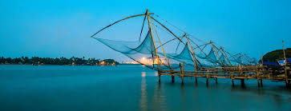
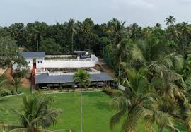
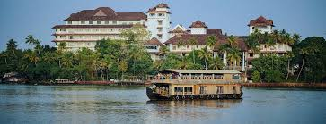
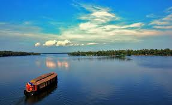
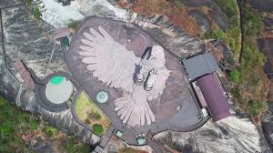
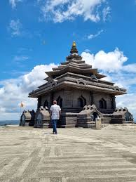
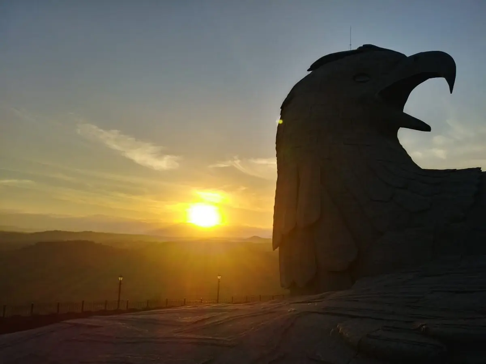
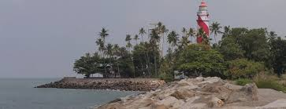
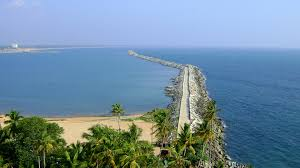
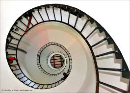

KOLLAM

About Kollam
Kollam, also known as **Quilon**, is a historic port city famous for its **cashew industry, scenic backwaters, and cultural heritage**. It is home to **Ashtamudi Lake**, a gateway to Kerala’s breathtaking backwaters.
Kollam at a Glance
Famous For: Backwaters, Beaches, Cashew, Temples
District: Kollam
Best Season to Visit: October – March
Weather: Summer 25-35°C, Winter 20-30°C
How to Reach Kollam
By Air
The nearest airport is **Trivandrum International Airport (TRV)**, about **66 km** away.
By Train
Kollam Junction is a major railway station connecting various parts of India.
By Road
Well-connected by **NH-66**, linking it to Trivandrum, Kochi, and other cities.
Top Attractions in Kollam
Ashtamudi Lake

Known as the **Gateway to Kerala’s Backwaters**, Ashtamudi Lake offers **houseboat cruises and serene views**.
IMAGES GALLERY:







VIDEOS GALLERY:
Here is a vedio that might help you understand more;
Jatayu Earth's Center

A unique **rock-themed adventure park**, featuring the **world’s largest bird sculpture**.
IMAGES GALLERY:




VIDEOS GALLERY:
Here is a vedio that might help you understand more;
Thangassery Lighthouse

A **historic 44-meter-high lighthouse**, offering **stunning coastal views**.
IMAGES GALLERY:






VIDEOS GALLERY:
Here is a vedio that might help you understand more;
Palaruvi Waterfalls

A beautiful **300-ft waterfall**, surrounded by lush greenery, perfect for a nature retreat.
IMAGES GALLERY:


VIDEOS GALLERY:
Here is a vedio that might help you understand more;

IMAGES:


YOUTUBE VIDEOS:
Check out this video:

Must-Try Restaurants in Kollam
- All Spice Restaurant
- Ramees Restaurant
- Indian Coffee House
- The Riverside
Best Places for Shopping
- Kollam Beach Market
- Cashew Factory Outlets
- Fathima Shopping Mall